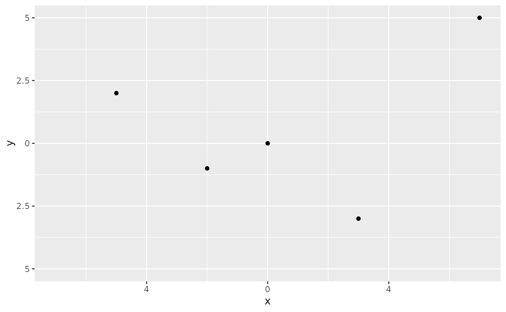

Diverging continuous scales for diverging bar charts with symmetrical limits
Source:R/scale_continuous_diverging.R
scale_continuous_diverging.RdThese scales automatically create symmetrical limits around a centre point (zero by default).
They're useful for diverging continuous variables where the visual encoding should
be balanced around a center point, such as positive and negative values.
They are intended to be used with geom_bar_diverging(), geom_area_diverging() and stat_diverging().
Usage
scale_x_continuous_diverging(
name = waiver(),
limits = waiver(),
labels = NULL,
transform = "identity",
...,
breaks = waiver(),
n.breaks = NULL,
expand = waiver(),
position = "bottom"
)
scale_y_continuous_diverging(
name = waiver(),
limits = NULL,
labels = NULL,
transform = "identity",
...,
breaks = waiver(),
n.breaks = NULL,
expand = waiver(),
position = "left"
)Arguments
- name
The name of the scale. Used as the axis or legend title. If
waiver(), the default, the name of the scale is taken from the first mapping used for that aesthetic. IfNULL, the legend title will be omitted.- limits
Numeric vector of length two providing limits of the scale. If
waiver()(the default), limits are automatically computed to be symmetrical around zero. UseNULLfor defaultggplot2limits.- labels
Either
waiver(), a character vector or a function that takes the breaks as input and returns labels as output. By default, absolute values are displayed or passed to the label function.- transform
Defaults to "identity". Use "reverse" to invert the scale. Especially useful to flip the direction of diverging bar charts.
- ...
Other arguments passed on to
scale_(x|y)_continuous()- breaks
One of:
NULLfor no breakswaiver()for the default breaks computed by the transformation objectA numeric vector of positions
A function that takes the limits as input and returns breaks as output (e.g., a function returned by
scales::extended_breaks()). Note that for position scales, limits are provided after scale expansion. Also accepts rlang lambda function notation.
- n.breaks
An integer guiding the number of major breaks. The algorithm may choose a slightly different number to ensure nice break labels. Will only have an effect if
breaks = waiver(). UseNULLto use the default number of breaks given by the transformation.- expand
For position scales, a vector of range expansion constants used to add some padding around the data to ensure that they are placed some distance away from the axes. Use the convenience function
expansion()to generate the values for theexpandargument. The defaults are to expand the scale by 5% on each side for continuous variables, and by 0.6 units on each side for discrete variables.- position
For position scales, The position of the axis.
leftorrightfor y axes,toporbottomfor x axes.
Examples
library(ggplot2)
# Create sample data with positive and negative values
df <- data.frame(
x = c(-5, -2, 0, 3, 7),
y = c(2, -1, 0, -3, 5)
)
# Basic usage
ggplot(df, aes(x, y)) +
geom_point() +
scale_x_continuous_diverging() +
scale_y_continuous_diverging()
